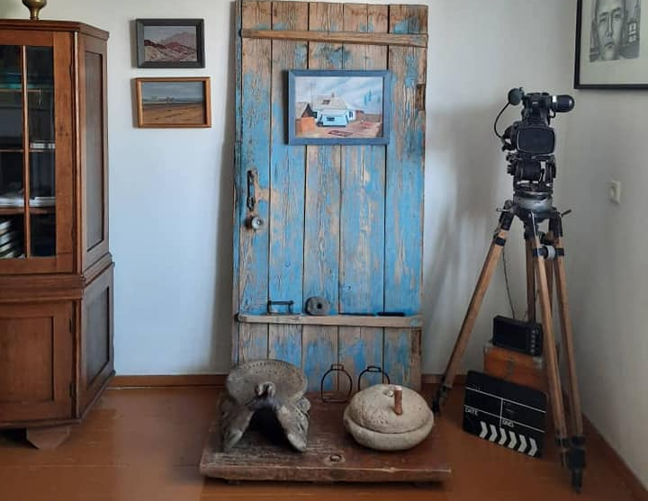

{% extends 'main/base.html' %}
{% block title %}
about
{% endblock %}
{% block content %}

"Когда с Мирланом затеяли коллекционировать вещи, связанные с нашими фильмами, случайно обратили внимание на старую дверь, уже не существующего родительского дома. Она стояла в сарае, думали, как-нибудь использовать добротные доски в хозяйстве. Сомневаясь, все же решились попробовать её поставить в качестве экспоната и, на удивление, дверь неотъемлимо вписалась в интерьер.
Тот дом снесли в 1998 году, он разваливался и не подлежал реконструкции. Мама тогда была жива, у неё взяли разрешение и, следуя традициям, совершили обряд молитвы и разобрали его.
Не осталось никаких свидетельств родового гнезда, но я, будучи рисующим, написал картину "Белый день", где запечатлён отчий дом. Сейчас это небольшое полотно является собственностью КГМИИ и вошло в эпохальный каталог "Искусство Кыргызстана". Эркин Болжуров сделал копию данной картины в своей излюбленной манере: написал маслом поверх фотографии на холсте.
Здесь же - отцовское седло, которое принес мой брат Женишбек, увидев наши начинания. "Мне 75 лет", - говорил он, когда дарил, - "А седлу, думаю, лет сто и сделано оно по всем канонам: каркас из древесины арчи обтянут толстой кожей верблюда". Рядом - жаргылчак, к сожалению, не наш, говорят, мамин выпросили для какого-то музея, так и пропал. А этот - с Ыссык-Куля привёз художник Элчибек.
Пусть эти предметы не имеют прямого отношения к фильмам: синяя дверь - свидетельница жизни близких нам и родных людей, отцовское седло - позже я и Мирлан седлали им своих коней, и жаргылчак, даже если не мамин, смотришь на него и вспоминаешь талкан со сметаной - так складывается коллекция, и всё это увлекательно и бесценно".
{% endblock %}